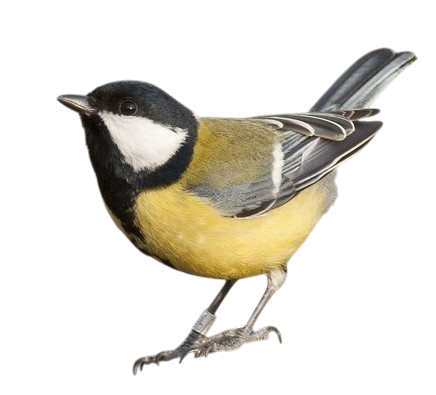
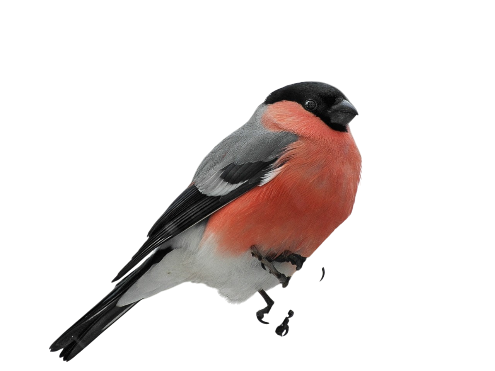
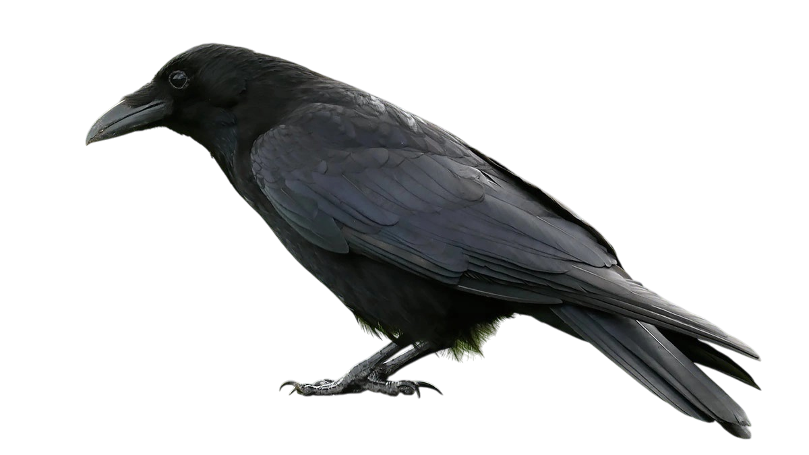
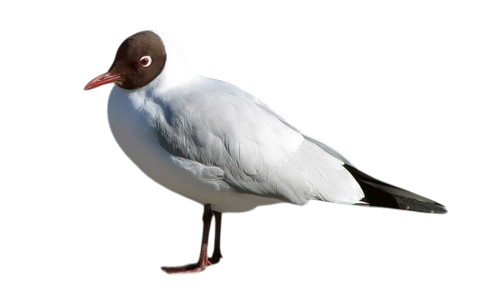
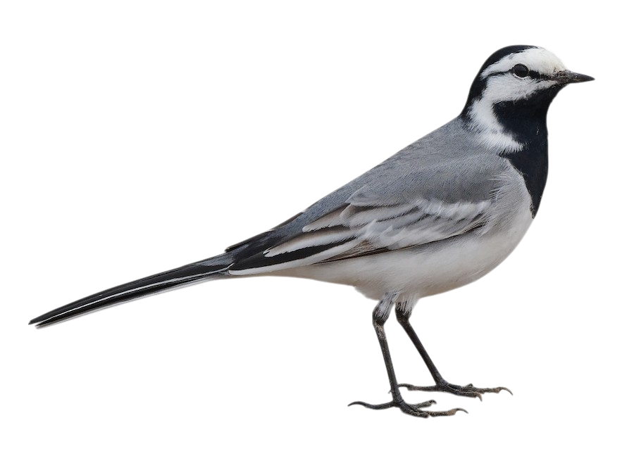
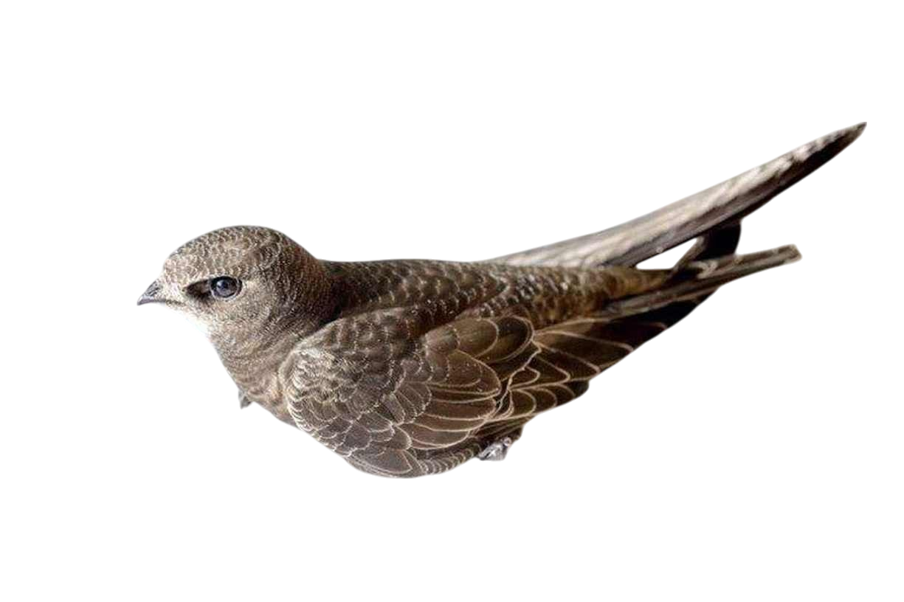
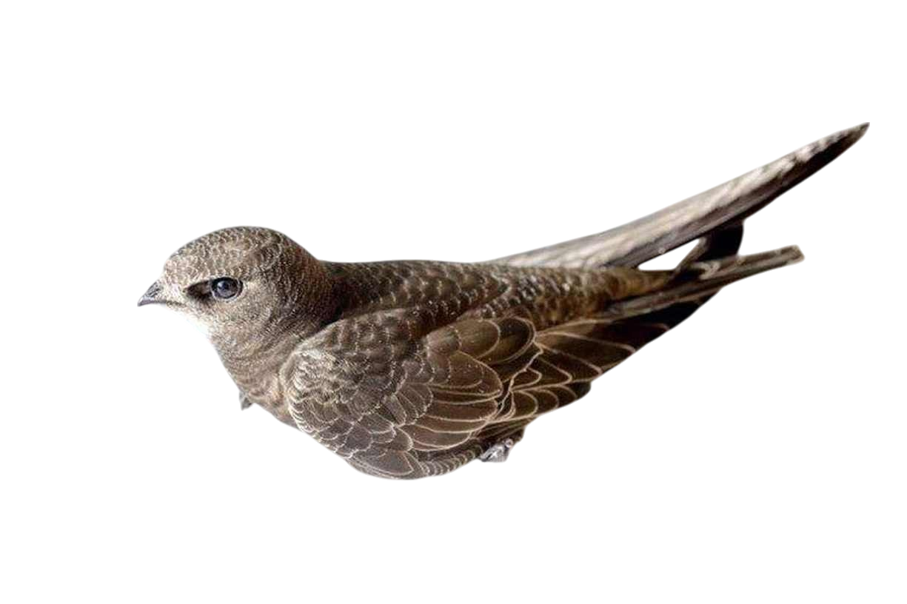
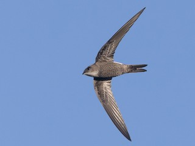

RS(Y)
YAKUTSK
ST // 05-25
ДЬОКУУСКАЙ
129° 40' 31.7136'' E
1
01 |
Большая синица
Улахан чычып-чаап
Parus major




Снегирь
Ымыы
| 02
Pyrrhula pyrrhula
03 |
Ворон
Суор
Corvus corax

Певчий сверчок
Улахан өлөҥ чыычааҕа
| 04

Helopsaltes certhiola
05 |
Озерная чайка
Күөл хоптото


Chroicocephalus ridibundus


Беркут
Хотой
| 06
Aquila chrysaetos
07 |
Воронок
Дьиэ хараҥаччыта
Delichon urbicum


Домовой воробей &&
Полевой воробей
Дьиэ барабыайа &&
Хонуу барабыайа
| 08
Passer domesticus
Passer montanus montanus
09 |
Белая трясогузка
Сылгы чыычааҕа
Motacilla alba

 

Apus pacificus
Белопоясный стриж
Таас хараҥаччыта
| 10
